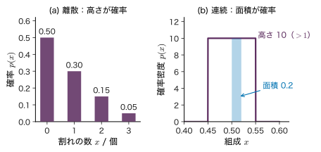
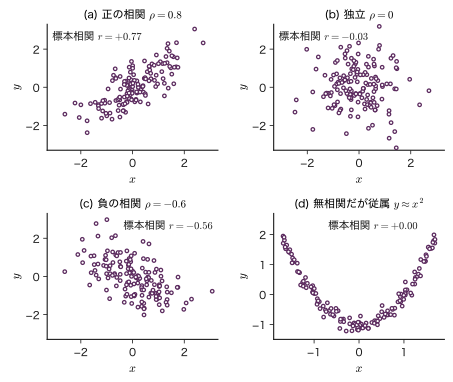
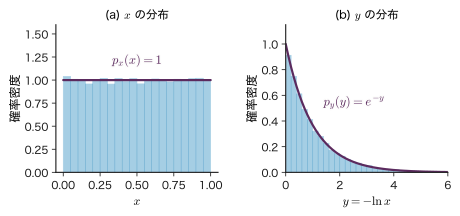
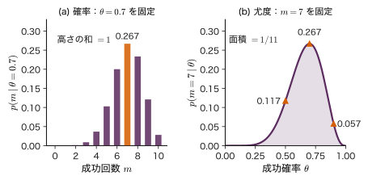
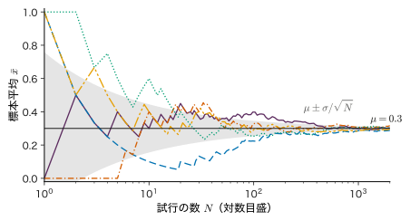
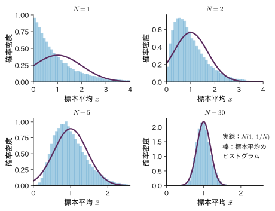

第2章確率・期待値・条件付き確率 — 不確かさを数える道具
- 欠陥を持つ試料が 2% しかない工程で，感度 95% の検査が「欠陥あり」と判定した．その試料が本当に欠陥を持つ確率はいくらか．
- 10 回の焼成で 7 回うまくいった．このとき「成功確率が 0.7 である確率」と「成功確率が 0.7 のときに 10 回中 7 回成功する確率」は同じものか．確率と尤度は何が違うのか．
- 同じ試料を何度も測れば測定値の平均はどこまで信用できるようになるのか．同じバッチの試料をたくさん測るのは，別々のバッチを測るのと同じ効果があるのか．
検査で「欠陥あり」と出たら，その試料はほぼ確実に欠陥品だと思いたくなる．ところが，欠陥品が 2% しかない工程で，感度 95%・誤検出 5% の検査を使うと，「欠陥あり」と出た試料のうち本当に欠陥を持つのは 3 割に満たない．10000 個を検査すると，欠陥品 200 個のうち 190 個が「欠陥あり」と出る一方，良品 9800 個のうち 490 個も「欠陥あり」と出てしまうからである．この計算の骨組みが，本章の中心にある Bayes（ベイズ）の定理である．
機械学習は，データから規則を学び，まだ見ていない入力について予測する技術である（第1章）．データには必ずばらつきがあり，予測には必ず外れがある．その「分からなさ」を数で扱う言葉が確率である．本章では，確率分布（離散と連続），同時分布・周辺化・条件付き分布，独立，Bayes の定理，期待値・分散・共分散，確率と尤度の違い，標本平均の性質（大数の法則と中心極限定理）を順に組み立てる．大学数学の第13・14章で学んだ確率と期待値の初歩から出発し，本書の残りの全章で使う道具をそろえる．
- 確率質量関数と確率密度関数の違いを説明し，「密度は確率ではない」ことを例で示せる．
- 加法定理と乗法定理を使って，同時分布の表から周辺分布と条件付き分布を手で計算できる．
- 独立と条件付き独立を定義に従って判定できる．
- Bayes の定理を導き，検査の問題で事後確率を計算し，事前確率が結果を大きく左右する理由を説明できる．
- 期待値の線形性，分散・共分散の公式を導き，共分散行列が半正定値であることを証明できる．無相関と独立の違いを反例で示せる．
- 同じ式 $p(\data\mid\theta)$ を「確率」と見るときと「尤度」と見るときの違いを説明できる．
- 標本平均の期待値と分散 $\sigma^{2}/N$ を導き，標準誤差と誤差の伝播を材料の測定に使える．
入門ルートで読む節：2.1，2.2，2.3，2.4，2.5，2.7，2.8，2.11．「詳しいルート」の印が付いた節は，初めて読むときは飛ばしてよい．
2.1 確率変数と確率分布 — 離散は高さ，連続は面積
2.1.1 何をしたいのか
焼結体を 1 個焼くと，表面の割れの数は 0 個のこともあれば 2 個のこともある．混晶の薄膜を作ると，組成は狙った値の近くでばらつく．このように，試行のたびに値が変わり，どの値がどれくらいの割合で出るかが決まっている量を確率変数（random variable）という．確率変数がどの値をどれくらいの割合でとるかを表したものが確率分布（probability distribution）である．
割れの数のように飛び飛びの値をとる量（離散）と，組成のように連続な値をとる量（連続）とでは，分布の表し方が違う（図2.1）．離散では「その値が出る確率」を棒の高さで表す．連続では，ある 1 点ちょうどの値が出る確率は 0 なので，「区間に入る確率」を曲線の下の面積で表す．この違いを押さえないと，「確率密度が 10 だから確率 10？」という混乱が起こる．

2.1.2 定義と記号
記号：確率変数とその値を同じ小文字で書く
大学数学 第14章では確率変数を大文字 $X$，そのとる値を小文字 $x$ と書き分け，期待値を $E(X)$，分散を $V(X)$ と書いた．機械学習の本では，確率変数とその値を同じ小文字 $x$ で書き，期待値を $\Ex[x]$，分散を $\Var[x]$ と書くのが一般的であり，本書もこれに従う．どちらの意味かは文脈で決まる．たとえば $p(x)$ と書けば「確率変数 $x$ の分布」を，$p(x=2)$ と書けば「値 2 をとる確率」を表す．事象 $A$ の確率は大学数学と同じく $P(A)$ と書く．
定義2.1 確率質量関数（離散）
確率変数 $x$ が飛び飛びの値 $x^{(1)},x^{(2)},\dots$ をとるとき，各値をとる確率 $p(x)=P(\text{確率変数が値 }x\text{ をとる})$ を確率質量関数（probability mass function）という．次の 2 つを満たす．
\begin{equation} p(x)\ge 0,\qquad \sum_{x}p(x)=1 \label{eq:2-pmf} \end{equation}和はとりうるすべての値についてとる．$p(x)$ は確率そのものなので，$0\le p(x)\le 1$ である．
定義2.2 確率密度関数（連続）
確率変数 $x$ が実数の値をとるとき，任意の $a\le b$ について
\begin{equation} P(a\le x\le b)=\int_{a}^{b}p(x)\,\dd x \label{eq:2-interval} \end{equation}となる関数 $p(x)$ を確率密度関数（probability density function）という．次の 2 つを満たす．
\begin{equation} p(x)\ge 0,\quad \int_{-\infty}^{\infty}p(x)\,\dd x=1 \label{eq:2-pdf} \end{equation}$x$ に単位があれば，$p(x)$ の単位は「$x$ の単位の逆数」である（$p(x)\,\dd x$ が無次元の確率になるため）．
本書では，確率質量関数と確率密度関数をどちらも $p(x)$ と書く（どちらを指すかは $x$ が離散か連続かで決まる）．連続の場合に次の 2 つの性質が重要である．
- 1 点の確率は 0：式 \eqref{eq:2-interval} で $a=b$ とすると積分の幅が 0 なので $P(x=a)=0$．したがって $P(a\le x\le b)$ と $P(a\lt x\lt b)$ は等しい．
- 密度は 1 を超えうる：式 \eqref{eq:2-pdf} が要求するのは「面積が 1」であって「高さが 1 以下」ではない．幅 $0.1$ の区間で一様な分布の密度は $1/0.1=10$ である（図2.1(b)）．
$p(x)$ の値そのものの意味は，小さな幅 $\Delta x$ について $P(x\le\text{確率変数}\le x+\Delta x)\approx p(x)\,\Delta x$ である．つまり密度は「単位の幅あたりの確率」であり，確率にするには必ず幅を掛ける．
離散でも連続でも使える量として，累積分布関数 $F(x)=P(\text{確率変数}\le x)$ がある．連続の場合は $F(x)=\int_{-\infty}^{x}p(x')\,\dd x'$ であり，微積分の基本定理から $p(x)=\diff{F}{x}$ が成り立つ（$F$ が微分できる点で）．2.6 節の変数変換はこの関係を使って導く．
例題2.1 確率質量関数と確率密度関数を読む
(1) 1 個の焼結体の割れの数 $x$ が，$p(0)=0.50$，$p(1)=0.30$，$p(2)=0.15$，$p(3)=0.05$ に従うとする（図2.1(a)．教育用の数値例）．割れが 1 個以上ある確率 $P(x\ge1)$ を求めよ．
(2) 薄膜の組成 $x$ が区間 $[0.45,\,0.55]$ の一様分布に従うとする．確率密度 $p(x)$ を求め，$P(0.50\le x\le 0.52)$ と $P(x=0.50)$ を求めよ．
解答 (1) 余事象を使う．割れが 1 個以上ある事象の余事象は「割れが 0 個」なので，$P(x\ge1)=1-p(0)=1-0.50=0.50$．直接足しても $0.30+0.15+0.05=0.50$ で一致する．
(2) 一様分布では区間の中で密度が一定なので $p(x)=c$（$0.45\le x\le0.55$），それ以外で 0 とおく．正規化 \eqref{eq:2-pdf} より $\int_{0.45}^{0.55}c\,\dd x=0.1\,c=1$，ゆえに $c=10$．したがって
$P(x=0.50)=\int_{0.50}^{0.50}10\,\dd x=0$ である．密度 $p(0.50)=10$ は 1 を超えているが，これは確率ではないので矛盾しない．
2.2 同時分布・周辺化・条件付き分布 — 加法定理と乗法定理
2.2.1 2×2 の表から始める
機械学習では，入力 $x$ と出力 $y$ のように2 つ以上の確率変数を同時に扱う．その基本は，次のような度数の表である．焼成温度を「低」「高」の 2 水準で変え，焼いた試料に異相（目的の相以外の結晶相）が出たかどうかを X 線回折で調べた結果とする．
| 異相あり | 異相なし | 行の和 | |
|---|---|---|---|
| 低温 | 24 | 56 | 80 |
| 高温 | 12 | 108 | 120 |
| 列の和 | 36 | 164 | 200 |
焼成温度を確率変数 $x\in\{\text{低},\text{高}\}$，異相の有無を確率変数 $y\in\{\text{有},\text{無}\}$ とする．この 200 個の試料から 1 個を無作為に選ぶという試行を考えると，度数を 200 で割った値が確率になる．たとえば「低温で焼いて，しかも異相あり」の確率は $24/200=0.12$ である．これを同時確率と呼び，$p(x=\text{低},y=\text{有})=0.12$ と書く．表の 4 つのます全体が同時分布 $p(x,y)$ である．
2.2.2 周辺化と加法定理
表の行の和をとると，温度だけについての確率が得られる．たとえば低温で焼いた確率は $0.12+0.28=0.40$ である．このように，興味のない変数（ここでは $y$）について和をとって消すことを周辺化（marginalization）といい，得られた $p(x)$ を周辺分布という．名前は，表の周辺（余白）に書くことに由来する．
定理2.1 加法定理（和の規則）
離散的な確率変数 $x,y$ について
\begin{equation} p(x)=\sum_{y}p(x,y) \label{eq:2-sum} \end{equation}連続のときは和を積分に置き換えて $p(x)=\int p(x,y)\,\dd y$ である（2.6 節）．
これは「事象 $\{x=\text{低}\}$ は，互いに排反な 2 つの事象 $\{x=\text{低},y=\text{有}\}$ と $\{x=\text{低},y=\text{無}\}$ の和集合である」ことと，排反な事象の確率は足せること（大学数学 第13章 13.5の加法定理）から従う．
2.2.3 条件付き分布と乗法定理
「低温で焼いた試料に限ると，異相が出る割合はいくらか」という問いには，表の低温の行（80 個）だけを見て $24/80=0.30$ と答える．これが条件付き確率である．確率で書けば，同時確率を条件側の周辺確率で割っている：$0.12/0.40=0.30$（図2.2の右）．
定義2.3 条件付き分布
$p(x)\gt 0$ である $x$ について，$x$ が与えられたときの $y$ の条件付き分布を
\begin{equation} p(y\mid x)=\frac{p(x,y)}{p(x)} \label{eq:2-cond} \end{equation}で定める．縦棒 $\mid$ の右が「条件（すでに分かっていること）」，左が「確率を考える対象」である．$x$ を固定すると $p(y\mid x)$ は $y$ の分布であり，$\sum_{y}p(y\mid x)=\sum_y p(x,y)/p(x)$ $=p(x)/p(x)=1$ を満たす（加法定理 \eqref{eq:2-sum} を使った）．
式 \eqref{eq:2-cond} の分母を払うと，同時分布を「条件付き分布 × 周辺分布」に分ける式が得られる．
定理2.2 乗法定理（積の規則）
\begin{equation} \begin{aligned} p(x,y)&=p(y\mid x)\,p(x)\\ &=p(x\mid y)\,p(y) \end{aligned} \label{eq:2-product} \end{equation}2 つ目の等号は，$x$ と $y$ の役割を入れ替えて同じ定義を使ったものである．
加法定理と乗法定理の 2 つが，本書で使う確率計算のすべての土台である．Bayes の定理（2.4 節）も，期待値の性質（2.5 節）も，グラフィカルモデル（第19章）も，GPT の学習目標（第26章）も，この 2 つの規則の組み合わせで書ける．
例題2.2 表から周辺確率と条件付き確率を求める
表2.1 から，(1) 異相が出る確率 $p(y=\text{有})$，(2) 低温のときと高温のときの異相の確率 $p(y=\text{有}\mid x=\text{低})$，$p(y=\text{有}\mid x=\text{高})$，(3) 異相が出た試料が低温で焼かれていた確率 $p(x=\text{低}\mid y=\text{有})$ を求めよ．(4) 乗法定理 \eqref{eq:2-product} が成り立つことを $x=\text{低}$，$y=\text{有}$ について確かめよ．
解答 (1) 加法定理で列について和をとる：$p(y=\text{有})=p(\text{低},\text{有})+p(\text{高},\text{有})$ $=0.12+0.06=0.18$．
(2) 定義 \eqref{eq:2-cond} より $p(y=\text{有}\mid x=\text{低})=0.12/0.40=0.30$，$p(y=\text{有}\mid x=\text{高})=0.06/0.60=0.10$．度数で計算しても $24/80=0.30$，$12/120=0.10$ で同じである．
(3) 今度は条件が $y$ の側なので，列の和で割る：$p(x=\text{低}\mid y=\text{有})$ $=0.12/0.18=2/3\approx0.667$（度数では $24/36$）．
(4) $p(y=\text{有}\mid x=\text{低})\,p(x=\text{低})$ $=0.30\times0.40=0.12$，$p(x=\text{低}\mid y=\text{有})\,p(y=\text{有})$ $=(2/3)\times0.18=0.12$．どちらも同時確率 $p(\text{低},\text{有})=0.12$ に一致する．
(2) の 0.30 と (3) の 0.667 は大きく違う．「低温なら異相が出やすい」の確率と「異相が出たなら低温だった」の確率は別物であり，混同してはいけない（2.10 節）．
2.2.4 乗法定理を繰り返す — 自己回帰分解
3 つの確率変数 $x_1,x_2,x_3$ の同時分布にも乗法定理を当てはめられる．$(x_1,x_2)$ を 1 つの変数とみなして $x_3$ を分けると $p(x_1,x_2,x_3)=p(x_3\mid x_1,x_2)\,p(x_1,x_2)$．さらに $p(x_1,x_2)=p(x_2\mid x_1)\,p(x_1)$ なので，
$$ p(x_1,x_2,x_3)=p(x_1)\,p(x_2\mid x_1)\,p(x_3\mid x_1,x_2). $$同じ操作を $T$ 個の変数について繰り返すと（$T$ についての数学的帰納法），次の式が得られる．
$t=1$ の因子は条件の無い $p(x_1)$ と読む．この式は近似を一切含まない恒等式であり，どんな同時分布も「それまでの値を条件とした次の値の分布」の積に書けることを意味する．添字 $t$ は順番（時刻や文中の位置）を表す．
発展：GPT は自己回帰分解をそのまま使っている
文章を単語（トークン）の列 $x_1,\dots,x_T$ と見ると，式 \eqref{eq:2-chain} は「文章全体の確率は，1 語目の確率 × 1 語目を見た後の 2 語目の確率 × … の積」と読める．第22章では，この積の条件を「直前の状態だけ」に縮めた隠れ Markov モデルを，第26章では，条件 $x_{\lt t}$ 全体を Transformer で読み込んで次のトークンの分布 $p(x_t\mid x_{\lt t})$ を出力する GPT を扱う．GPT が「次の単語を予測するだけで文章全体の確率モデルになる」のは，この恒等式のおかげである（第22章 22.3，第26章 26.3）．
2.3 独立と条件付き独立
2.3.1 独立
表2.1 では，低温のとき異相の確率は 0.30，高温のとき 0.10 で，温度によって変わった．温度を知ると異相についての予想が変わるので，2 つの変数は「関係がある」．逆に，条件を付けても分布が変わらないとき，2 つの変数は独立であるという．
定義2.4 独立
確率変数 $x$ と $y$ が独立（independent）であるとは，すべての $x,y$ について
\begin{equation} p(x,y)=p(x)\,p(y) \label{eq:2-indep} \end{equation}が成り立つことをいう．$p(x)\gt0$ のとき，これは $p(y\mid x)=p(y)$（$x$ を知っても $y$ の分布が変わらない）と同値である．
同値であることは乗法定理から分かる．式 \eqref{eq:2-indep} が成り立てば，定義 \eqref{eq:2-cond} より $p(y\mid x)=p(x)p(y)/p(x)=p(y)$．逆に $p(y\mid x)=p(y)$ なら，乗法定理 \eqref{eq:2-product} より $p(x,y)=p(y\mid x)p(x)=p(y)p(x)$．大学数学 第13章 13.5 の「独立な試行」は，この定義の特別な場合である．
表2.1 では $p(\text{低},\text{有})=0.12$ に対して $p(\text{低})\,p(\text{有})=0.40\times0.18=0.072$ なので，式 \eqref{eq:2-indep} が成り立たない．温度と異相は独立ではない．1 つのますでも成り立たなければ独立ではない．逆に独立と言うには，すべてのますで成り立つことを確かめる必要がある（ただし 2×2 の表では，1 つのますで成り立てば周辺の和の関係から残りの 3 つも自動的に成り立つ．演習2.1 の後で確かめてみるとよい）．
例題2.3 独立かどうかを表で判定する
研磨担当者 A と B が試料を研磨し，表面の傷の有無を調べた（教育用の合成データ）．A は 60 個中 6 個，B は 40 個中 4 個に傷があった．担当者と傷の有無は独立か．
| 傷あり | 傷なし | 行の和 | |
|---|---|---|---|
| 担当者 A | 6 | 54 | 60 |
| 担当者 B | 4 | 36 | 40 |
| 列の和 | 10 | 90 | 100 |
解答 担当者を $x$，傷を $y$ とする．周辺確率は $p(x=\text{A})=0.60$，$p(x=\text{B})=0.40$，$p(y=\text{傷})=0.10$，$p(y=\text{無})=0.90$．4 つのますで式 \eqref{eq:2-indep} を確かめる．左辺は表の同時確率，右辺は周辺確率の積 $p(x)\,p(y)$ である．
$$ \begin{aligned} p(\text{A},\text{傷})=0.06&=0.60\times0.10,\\ p(\text{A},\text{無})=0.54&=0.60\times0.90,\\ p(\text{B},\text{傷})=0.04&=0.40\times0.10,\\ p(\text{B},\text{無})=0.36&=0.40\times0.90. \end{aligned} $$すべて一致するので独立である．条件付き確率で見ても $p(\text{傷}\mid\text{A})=6/60=0.10$，$p(\text{傷}\mid\text{B})=4/40=0.10$ で，担当者によらず周辺確率 0.10 に等しい．
ただし，これは「この 100 個の表の上では」の話である．実際のデータでは偶然のばらつきがあるので，度数がぴったり比例することはまずない．有限のデータから独立かどうかを判断するには，第4章以降の推定の考え方が必要になる．
2.3.2 条件付き独立
機械学習のモデルでは，「ある変数を知れば，残りの変数どうしは関係がなくなる」という形の仮定がよく使われる．
定義2.5 条件付き独立
$z$ が与えられたもとで $x$ と $y$ が条件付き独立（conditionally independent）であるとは，すべての $x,y$ と $p(z)\gt0$ であるすべての $z$ について
\begin{equation} p(x,y\mid z)=p(x\mid z)\,p(y\mid z) \label{eq:2-condindep} \end{equation}が成り立つことをいう．$p(y,z)\gt0$ のとき，これは $p(x\mid y,z)=p(x\mid z)$（$z$ を知っていれば，さらに $y$ を知っても $x$ の分布は変わらない）と同値である．
条件付き独立と独立は別の性質であり，一方から他方は導けない．次の例は，条件付き独立だが独立ではない典型である．
例2.1 同じ試料を 2 回検査する
試料が欠陥を持つかどうかを $z\in\{\text{欠陥},\text{良}\}$ とし，$p(z=\text{欠陥})=0.02$ とする．検査を 2 回行い，それぞれの結果を $x_1,x_2\in\{+,-\}$（$+$ は「欠陥あり」の判定）とする．検査の誤りは試料の状態だけで決まり，1 回目と 2 回目で互いに影響しないと仮定する．すなわち $z$ が与えられたもとで $x_1$ と $x_2$ は条件付き独立で，$p(x_i=+\mid\text{欠陥})=0.95$，$p(x_i=+\mid\text{良})=0.05$ とする．
2 回とも $+$ になる確率は，加法定理と乗法定理，条件付き独立 \eqref{eq:2-condindep} を順に使って
$$ \begin{aligned} &p(x_1=+,x_2=+)\\ &=\sum_{z}p(x_1=+,x_2=+\mid z)\,p(z)\\ &=\sum_{z}p(x_1=+\mid z)\,p(x_2=+\mid z)\,p(z)\\ &=0.95^{2}\times0.02+0.05^{2}\times0.98\\ &=0.01805+0.00245=0.0205 . \end{aligned} $$一方，1 回の検査で $+$ になる確率は $p(x_1=+)=0.95\times0.02+0.05\times0.98$ $=0.068$ なので，$p(x_1=+)\,p(x_2=+)=0.068^{2}\approx0.0046$．$0.0205\ne0.0046$ なので，$x_1$ と $x_2$ は独立ではない．1 回目が $+$ なら「欠陥品かもしれない」と分かり，2 回目も $+$ になりやすいからである．$z$ を知らないときは，2 回の検査は $z$ を通じてつながっている．
2.4 Bayes の定理 — 原因の確率を逆算する
2.4.1 定理の導出
検査の場面で私たちが知っているのは，「欠陥品なら 95% の確率で $+$ と出る」のように原因から結果への確率 $p(\text{結果}\mid\text{原因})$ である．一方，知りたいのは「$+$ と出たとき欠陥品である確率」，つまり結果から原因への確率 $p(\text{原因}\mid\text{結果})$ である．この向きを入れ替えるのが Bayes（ベイズ）の定理である．
乗法定理 \eqref{eq:2-product} の 2 つの表し方は等しい：$p(y\mid x)\,p(x)=p(x\mid y)\,p(y)$．両辺を $p(y)\gt0$ で割ると，
定理2.3 Bayes の定理
\begin{equation} \begin{gathered} p(x\mid y)=\frac{p(y\mid x)\,p(x)}{p(y)},\\ p(y)=\sum_{x'}p(y\mid x')\,p(x') \end{gathered} \label{eq:2-bayes} \end{equation}分母の式は，加法定理 \eqref{eq:2-sum} と乗法定理 \eqref{eq:2-product} から $p(y)=\sum_{x'}p(x',y)=\sum_{x'}p(y\mid x')\,p(x')$ として得られる．$x$ が連続なら和を積分に置き換える．
$x$ を「原因（知りたいこと）」，$y$ を「観測（データ）」と読むと，各項に次の名前が付いている．
- $p(x)$：事前確率（prior）．観測の前に原因についてもっている確率．
- $p(y\mid x)$：尤度（likelihood）．原因が $x$ だったとしたら観測 $y$ がどれくらい起こりやすいか．観測 $y$ を固定して $x$ の関数とみる（2.7 節）．
- $p(x\mid y)$：事後確率（posterior）．観測 $y$ の後で原因についてもつ確率．
- $p(y)$：周辺尤度（marginal likelihood．証拠（エビデンス，evidence）とも呼ぶ）．$x$ に依らない正規化定数で，事後確率の和を 1 にする．
まとめると「事後 ∝ 尤度 × 事前」である．第4章では，原因 $x$ を「モデルのパラメーター $\theta$」に，観測 $y$ を「データ $\data$」に置き換えて，同じ式をパラメーターの推定に使う（第4章 4.3）．
2.4.2 欠陥検査の例
例題2.4 欠陥検査の事後確率
ある工程で作る試料のうち 2% が内部欠陥を持つ．超音波検査は，欠陥がある試料を 95% の確率で「$+$（欠陥あり）」と判定し（感度），欠陥がない試料を 5% の確率で誤って $+$ と判定する（偽陽性率）．数値は教育用の設定である．(1) ある試料が $+$ と判定された．欠陥を持つ確率を求めよ．(2) 判定が $-$ だったときに欠陥を持つ確率を求めよ．(3) $+$ と判定された試料をもう一度検査したら，また $+$ だった．2 回の検査は欠陥の有無が与えられたもとで条件付き独立（例2.1）とすると，欠陥を持つ確率はいくらになるか．
解答 欠陥の有無を $z\in\{\text{欠陥},\text{良}\}$，判定を $x\in\{+,-\}$ とする．与えられた値は $p(\text{欠陥})=0.02$，$p(+\mid\text{欠陥})=0.95$，$p(+\mid\text{良})=0.05$．
(1) まず分母（周辺尤度）を加法定理で求める：
$$ \begin{aligned} p(+)&=p(+\mid\text{欠陥})\,p(\text{欠陥})+p(+\mid\text{良})\,p(\text{良})\\ &=0.95\times0.02+0.05\times0.98\\ &=0.019+0.049=0.068 . \end{aligned} $$Bayes の定理 \eqref{eq:2-bayes} より
$$ p(\text{欠陥}\mid +)=\frac{0.95\times0.02}{0.068}=\frac{0.019}{0.068}\approx0.279 . $$$+$ と判定されても，欠陥を持つ確率は約 28% にすぎない．
(2) $p(-)=1-p(+)=0.932$，$p(-\mid\text{欠陥})=1-0.95=0.05$ なので $p(\text{欠陥}\mid -)=0.05\times0.02/0.932$ $=0.001/0.932\approx0.00107$．$-$ の判定はかなり信用できる．
(3) 1 回目の事後確率 $q=p(\text{欠陥}\mid+)\approx0.2794$ を，2 回目の検査の事前確率として使う（逐次更新）：
ここで $0.95\times0.2794=0.2654$，$0.05\times0.7206=0.0360$ である．2 回の観測を一度に使っても同じになる．条件付き独立より $p(+,+\mid\text{欠陥})=0.95^{2}$，$p(+,+\mid\text{良})=0.05^{2}$ なので，
$$ \begin{aligned} p(\text{欠陥}\mid +,+)&=\frac{0.95^{2}\times0.02}{0.95^{2}\times0.02+0.05^{2}\times0.98}\\ &=\frac{0.01805}{0.0205}\approx0.880 . \end{aligned} $$(1) の結果が直観に反するのは，事前確率（2%）が小さいからである．具体的な個数に直すと理由が見える（図2.3，表2.3）．10000 個のうち欠陥品は 200 個で，そのうち 190 個が $+$ になる．良品は 9800 個もあるので，その 5% でも 490 個が $+$ になる．$+$ の 680 個のうち欠陥品は 190 個だけである．
| 判定 ＋ | 判定 − | 行の和 | |
|---|---|---|---|
| 欠陥あり | 190 | 10 | 200 |
| 欠陥なし | 490 | 9310 | 9800 |
| 列の和 | 680 | 9320 | 10000 |
表2.3 は表2.1 と同じ形の同時分布の表である．$p(+\mid\text{欠陥})=190/200$ は行で割った条件付き確率，$p(\text{欠陥}\mid+)=190/680$ は列で割った条件付き確率である．Bayes の定理は「行で割った確率から，列で割った確率を作る手順」と言い換えられる．
イメージ：オッズで書くと掛け算 1 回になる
確率 $q$ に対して $q/(1-q)$ をオッズという．Bayes の定理を「欠陥」と「良」の 2 つについて書いて割り算すると，分母 $p(+)$ が消えて
$$ \frac{p(\text{欠陥}\mid +)}{p(\text{良}\mid +)}=\frac{p(+\mid\text{欠陥})}{p(+\mid\text{良})}\times\frac{p(\text{欠陥})}{p(\text{良})} $$となる．「事後オッズ ＝ 尤度比 × 事前オッズ」である．例題2.4 では尤度比が $0.95/0.05=19$，事前オッズが $0.02/0.98\approx0.0204$ なので，事後オッズは $19\times0.0204\approx0.388$，確率に直すと $0.388/1.388\approx0.279$ で一致する．同じ検査をもう 1 回通すと，さらに 19 倍されて $7.37$，確率は $0.880$ である．尤度比が同じでも，事前オッズが小さければ事後確率は小さいままである．
2.5 期待値・分散・共分散・相関係数
2.5.1 期待値とその線形性
分布全体を見る代わりに，それを少数の数で要約したいことが多い．もっとも基本的な要約が期待値（平均）であり，ばらつきの大きさを表すのが分散，2 つの量の連動を表すのが共分散である．期待値は大学数学 第14章で定義した．ここでは機械学習の記号で書き直し，2 変数以上に広げる．
定義2.6 期待値
確率変数 $x$ の関数 $f(x)$ の期待値を
\begin{equation} \begin{aligned} \Ex[f(x)]&=\sum_{x}f(x)\,p(x),\\ \Ex[f(x)]&=\int f(x)\,p(x)\,\dd x \end{aligned} \label{eq:2-expect} \end{equation}で定める（上が離散，下が連続の場合．和・積分が絶対収束するときに限る）．$f(x)=x$ のとき $\Ex[x]$ を $x$ の平均といい，$\mu$ と書く．2 変数の関数 $f(x,y)$ については $\Ex[f(x,y)]=\sum_{x}\sum_{y}f(x,y)\,p(x,y)$ である．どの分布で平均をとるかを明示したいときは $\Ex_{p}[\,\cdot\,]$ と書く．
「絶対収束するときに限る」は飾りではない．第3章で扱う Cauchy 分布（Lorentz 型）では積分が収束せず，平均が存在しない（第3章 3.7）．
定理2.4 期待値の線形性
定数 $a,b,c$ と確率変数 $x,y$ について，
\begin{equation} \begin{aligned} &\Ex[ax+by+c]\\ &=a\,\Ex[x]+b\,\Ex[y]+c \end{aligned} \label{eq:2-linear} \end{equation}が成り立つ．$x$ と $y$ が独立でなくても成り立つ．
証明
離散の場合を示す（連続なら和を積分に置き換える）．定義 \eqref{eq:2-expect} を 2 変数で書き，和を 3 つに分ける．
\begin{align} &\Ex[ax+by+c]\notag\\ &=\sum_{x}\sum_{y}(ax+by+c)\,p(x,y)\notag\\ &=a\sum_{x}x\sum_{y}p(x,y)\notag\\ &\quad+b\sum_{y}y\sum_{x}p(x,y)\notag\\ &\quad+c\sum_{x}\sum_{y}p(x,y)\notag\\ &=a\sum_{x}x\,p(x)+b\sum_{y}y\,p(y)+c\cdot 1\notag\\ &=a\,\Ex[x]+b\,\Ex[y]+c .\notag \end{align}3 つに分けた和から次の行へ移るところで，加法定理 \eqref{eq:2-sum}（$\sum_y p(x,y)=p(x)$ と $\sum_x p(x,y)=p(y)$）と正規化 $\sum_x\sum_y p(x,y)=1$ を使った．独立の仮定はどこにも使っていない．
（証明終わり）
線形性は便利だが，非線形な関数については $\Ex[f(x)]\ne f(\Ex[x])$ が一般である．たとえば $\Ex[x^{2}]$ と $(\Ex[x])^{2}$ の差が，次に定義する分散である．
2.5.2 分散
定義2.7 分散と標準偏差
$\mu=\Ex[x]$ として，$x$ の分散（variance）と標準偏差（standard deviation）を
\begin{equation} \begin{gathered} \Var[x]=\Ex\!\left[(x-\mu)^{2}\right]=\sigma^{2},\\ \sigma=\sqrt{\Var[x]} \end{gathered} \label{eq:2-var-def} \end{equation}で定める．分散は「平均からのずれの 2 乗」の平均で，$x$ の単位の 2 乗の単位をもつ．標準偏差は $x$ と同じ単位をもつ．
定理2.5 分散の公式
\begin{equation} \Var[x]=\Ex[x^{2}]-(\Ex[x])^{2} \label{eq:2-var} \end{equation} \begin{equation} \Var[ax+b]=a^{2}\,\Var[x] \label{eq:2-var-shift} \end{equation}証明
式 \eqref{eq:2-var}：$(x-\mu)^{2}=x^{2}-2\mu x+\mu^{2}$ を展開し，$\mu$ が定数であることと線形性 \eqref{eq:2-linear} を使う．
$$ \begin{aligned} \Var[x]&=\Ex[x^{2}]-2\mu\,\Ex[x]+\mu^{2}\\ &=\Ex[x^{2}]-2\mu^{2}+\mu^{2}=\Ex[x^{2}]-\mu^{2}. \end{aligned} $$式 \eqref{eq:2-var-shift}：線形性より $\Ex[ax+b]=a\mu+b$．したがって $(ax+b)-\Ex[ax+b]=a(x-\mu)$ で，
$$ \begin{aligned} \Var[ax+b]&=\Ex\!\left[a^{2}(x-\mu)^{2}\right]\\ &=a^{2}\,\Ex\!\left[(x-\mu)^{2}\right]=a^{2}\,\Var[x]. \end{aligned} $$定数 $b$ を足しても分布が平行移動するだけなので，ばらつきは変わらない．$a$ 倍すると標準偏差は $\abs{a}$ 倍になる．
（証明終わり）
2.5.3 共分散と相関係数
定義2.8 共分散と相関係数
$\mu_x=\Ex[x]$，$\mu_y=\Ex[y]$ として，$x$ と $y$ の共分散（covariance）と相関係数（correlation coefficient）を
\begin{equation} \begin{aligned} &\Cov[x,y]\\ &=\Ex\!\left[(x-\mu_x)(y-\mu_y)\right]\\ &=\Ex[xy]-\mu_x\mu_y,\\ &\rho=\frac{\Cov[x,y]}{\sqrt{\Var[x]\,\Var[y]}} \end{aligned} \label{eq:2-cov} \end{equation}で定める（2 つ目の等号は式 \eqref{eq:2-var} と同じ展開で得られる．演習2.3）．$\Cov[x,x]=\Var[x]$ である．相関係数は単位をもたず，$-1\le\rho\le1$ を満たす（演習2.4）．
共分散の符号は，「$x$ が平均より大きいとき $y$ も平均より大きくなりがちか（正），小さくなりがちか（負）」を表す．相関係数は，それを両者の標準偏差で割って単位と大きさの影響を取り除いたものである．図2.4 に，相関係数の異なる 2 変数の標本を示す．

図2.4(d) のように，$y$ が $x$ でほぼ決まっているのに相関係数がほぼ 0 になることがある．相関係数が測るのは直線的な関係の強さだけである．
定理2.6 和の分散と，独立なときの共分散
\begin{equation} \begin{aligned} &\Var[x+y]\\ &=\Var[x]+\Var[y]\\ &\quad+2\,\Cov[x,y] \end{aligned} \label{eq:2-var-sum} \end{equation}また，$x$ と $y$ が独立ならば $\Ex[xy]=\Ex[x]\,\Ex[y]$，したがって $\Cov[x,y]=0$ であり，$\Var[x+y]=\Var[x]+\Var[y]$ となる．
証明
$x+y$ の平均は線形性より $\mu_x+\mu_y$ なので，
\begin{align} \Var[x+y]&=\Ex\!\left[\bigl((x-\mu_x)+(y-\mu_y)\bigr)^{2}\right]\notag\\ &=\Ex\!\left[(x-\mu_x)^{2}\right]+\Ex\!\left[(y-\mu_y)^{2}\right]\notag\\ &\quad+2\,\Ex\!\left[(x-\mu_x)(y-\mu_y)\right]\notag\\ &=\Var[x]+\Var[y]+2\,\Cov[x,y].\notag \end{align}独立のときは $p(x,y)=p(x)p(y)$ を代入して和を分ける：
$$ \begin{aligned} \Ex[xy]&=\sum_{x}\sum_{y}xy\,p(x)\,p(y)\\ &=\Bigl(\sum_{x}x\,p(x)\Bigr)\Bigl(\sum_{y}y\,p(y)\Bigr)=\Ex[x]\,\Ex[y]. \end{aligned} $$よって $\Cov[x,y]=\Ex[xy]-\Ex[x]\Ex[y]=0$．
（証明終わり）
逆は成り立たない：$\Cov[x,y]=0$（無相関）でも独立とは限らない．次の例題2.6 が反例である．
例題2.5 同時分布の表から期待値・分散・共分散を求める
焼結体 1 個の割れの数 $x\in\{0,1,2\}$ と異相の有無 $y\in\{0,1\}$（1 が「あり」）の同時分布が表2.4で与えられる（教育用の数値例）．$\Ex[x]$，$\Ex[y]$，$\Var[x]$，$\Var[y]$，$\Cov[x,y]$，$\rho$，$\Var[x+y]$ を求めよ．
| $y=0$ | $y=1$ | $p(x)$ | |
|---|---|---|---|
| $x=0$ | 0.40 | 0.10 | 0.50 |
| $x=1$ | 0.15 | 0.15 | 0.30 |
| $x=2$ | 0.05 | 0.15 | 0.20 |
| $p(y)$ | 0.60 | 0.40 | 1 |
解答 周辺分布は表の右と下に書いた（加法定理）．
- $\Ex[x]=0\times0.50+1\times0.30+2\times0.20$ $=0.70$，$\Ex[x^{2}]=0+1\times0.30+4\times0.20=1.10$，$\Var[x]=1.10-0.70^{2}=0.61$．
- $\Ex[y]=0.40$，$\Ex[y^{2}]=0.40$（$y^{2}=y$ なので），$\Var[y]=0.40-0.16=0.24$．
- $\Ex[xy]$ は $xy\ne0$ のます（$x\ge1$ かつ $y=1$）だけが寄与する：$\Ex[xy]=1\times1\times0.15$ $+2\times1\times0.15=0.45$．
- $\Cov[x,y]=0.45-0.70\times0.40$ $=0.45-0.28=0.17$．
- $\rho=0.17/\sqrt{0.61\times0.24}$ $=0.17/\sqrt{0.1464}$ $=0.17/0.3826\approx0.444$．
- $\Var[x+y]=0.61+0.24$ $+2\times0.17=1.19$．
最後の値は，$s=x+y$ の分布から直接求めても一致する：$s$ は $0,1,2,3$ を確率 $0.40,\,0.25,\,0.20,\,0.15$ でとり（$s=1$ は $(0,1)$ と $(1,0)$，$s=2$ は $(1,1)$ と $(2,0)$ の和），$\Ex[s]=1.10$，$\Ex[s^{2}]=0.25+0.80+1.35=2.40$，$\Var[s]=2.40-1.21=1.19$．共分散が正なので，独立と仮定して $0.61+0.24=0.85$ とすると，ばらつきを小さく見積もってしまう．
例題2.6 無相関だが独立ではない
$x$ が $-1,0,1$ をそれぞれ確率 $1/3$ でとり，$y=x^{2}$ とする．$\Cov[x,y]=0$ であるが，$x$ と $y$ は独立でないことを示せ．
解答 $\Ex[x]=(-1+0+1)/3=0$．$xy=x^{3}$ は $-1,0,1$ を確率 $1/3$ ずつとるので $\Ex[xy]=0$．よって $\Cov[x,y]=\Ex[xy]-\Ex[x]\Ex[y]=0-0=0$ で，無相関である．
一方，$y=0$ となるのは $x=0$ のときだけなので $p(y=0)=1/3$ だが，$p(y=0\mid x=0)=1$ である．$p(y\mid x)\ne p(y)$ なので独立ではない．$y$ は $x$ で完全に決まっているにもかかわらず，関係が直線的でない（左右対称）ため共分散が打ち消し合って 0 になった．図2.4(d) はこれにノイズを加えたものである．
2.5.4 共分散行列は半正定値
入力が $D$ 個の成分をもつベクトル $\bm{x}=(x_1,\dots,x_D)^{\tp}\in\R^{D}$ のとき，平均ベクトル $\bm{\mu}=\Ex[\bm{x}]\in\R^{D}$（成分ごとの期待値）と，すべての組の共分散を並べた行列を使う．
定義2.9 共分散行列
\begin{equation} \begin{aligned} \bm{\Sigma}&=\Cov[\bm{x}]\in\R^{D\times D}\\ &=\Ex\!\left[(\bm{x}-\bm{\mu})(\bm{x}-\bm{\mu})^{\tp}\right],\\ \Sigma_{ij}&=\Cov[x_i,x_j] \end{aligned} \label{eq:2-covmat} \end{equation}$(\bm{x}-\bm{\mu})$ は $D\times1$，$(\bm{x}-\bm{\mu})^{\tp}$ は $1\times D$ なので，その積は $D\times D$ 行列であり，期待値は成分ごとにとる．対角成分 $\Sigma_{ii}=\Var[x_i]$ は各成分の分散である．$\Cov[x_i,x_j]=\Cov[x_j,x_i]$ なので $\bm{\Sigma}$ は対称行列である．
定理2.7 共分散行列は半正定値
任意の定数ベクトル $\bm{a}\in\R^{D}$ について
\begin{equation} \bm{a}^{\tp}\bm{\Sigma}\bm{a}=\Var\!\left[\bm{a}^{\tp}\bm{x}\right]\ge 0 \label{eq:2-psd} \end{equation}が成り立つ．すなわち $\bm{\Sigma}$ は半正定値である．
証明
スカラーの確率変数 $u=\bm{a}^{\tp}\bm{x}=\sum_{i}a_i x_i$ を考える．線形性 \eqref{eq:2-linear} より $\Ex[u]=\bm{a}^{\tp}\bm{\mu}$ なので，$u-\Ex[u]=\bm{a}^{\tp}(\bm{x}-\bm{\mu})$．これはスカラーなので，転置しても同じ値 $(\bm{x}-\bm{\mu})^{\tp}\bm{a}$ である．したがって
\begin{align} \Var[u]&=\Ex\!\left[\bigl(\bm{a}^{\tp}(\bm{x}-\bm{\mu})\bigr)\bigl((\bm{x}-\bm{\mu})^{\tp}\bm{a}\bigr)\right]\notag\\ &=\bm{a}^{\tp}\,\Ex\!\left[(\bm{x}-\bm{\mu})(\bm{x}-\bm{\mu})^{\tp}\right]\bm{a}=\bm{a}^{\tp}\bm{\Sigma}\bm{a}.\notag \end{align}2 行目では，定数の $\bm{a}^{\tp}$ と $\bm{a}$ を期待値の外に出した（成分で書けば $\sum_{i,j}a_i a_j\,\Ex[(x_i-\mu_i)(x_j-\mu_j)]$ で，線形性そのものである）．分散は 2 乗の期待値なので負にならない．よって $\bm{a}^{\tp}\bm{\Sigma}\bm{a}\ge0$．
（証明終わり）
この性質から，$\bm{\Sigma}$ の固有値はすべて 0 以上である（固有ベクトル $\bm{a}$ について $\bm{a}^{\tp}\bm{\Sigma}\bm{a}=\lambda\norm{\bm{a}}^{2}\ge0$）．固有値が 0 になるのは，ある線形結合 $\bm{a}^{\tp}\bm{x}$ がばらつかない（一定値をとる）ときである．たとえば組成の分率 $x_1+x_2+x_3=1$ を 3 成分とも入力にすると，$\bm{a}=(1,1,1)^{\tp}$ について分散が 0 になり，$\bm{\Sigma}$ は正則でなくなる．多変量 Gauss 分布（第3章 3.6）やガウス過程（第12章 12.2）では，$\bm{\Sigma}$ のこの性質が理論の土台になる．例題2.5 の 2×2 の共分散行列 $\begin{pmatrix}0.61&0.17\\0.17&0.24\end{pmatrix}$ の行列式は $0.61\times0.24-0.17^{2}=0.1175\gt0$，対角成分も正なので，実際に正定値である．
2.6 連続変数の同時密度と変数変換詳しいルート
2.6.1 同時密度・周辺密度・条件付き密度
2 つの連続な確率変数 $x,y$ の同時密度 $p(x,y)$ は，平面上の領域 $A$ に $(x,y)$ が入る確率を
$$ P\bigl((x,y)\in A\bigr)=\iint_{A}p(x,y)\,\dd x\,\dd y $$で与える関数である（$p\ge0$，全平面での積分が 1）．離散の場合の和を積分に置き換えれば，加法定理・乗法定理・Bayes の定理はそのまま成り立つ．
\begin{equation} \begin{gathered} p(x)=\int p(x,y)\,\dd y,\\ p(y\mid x)=\frac{p(x,y)}{p(x)},\\ p(x\mid y)=\frac{p(y\mid x)\,p(x)}{\int p(y\mid x')\,p(x')\,\dd x'} \end{gathered} \label{eq:2-cont-rules} \end{equation}条件付き密度 $p(y\mid x)$ は，$x$ を固定した「切り口」を，その切り口の面積 $p(x)$ で割って正規化したものと読める．
例題2.7 三角形の上の一様な同時密度
$(x,y)$ が三角形 $0\le y\le x\le1$ の上に一様に分布する．(1) 同時密度 $p(x,y)$ を求めよ．(2) 周辺密度 $p(x)$，$p(y)$ を求めよ．(3) 条件付き密度 $p(y\mid x)$ を求めよ．(4) $\Ex[x]$，$\Ex[y]$，$\Cov[x,y]$ を求めよ．
解答 (1) 三角形の面積は $1/2$ なので，一定の密度 $c$ について $c\times\tfrac12=1$，$c=2$．三角形の中で $p(x,y)=2$，外で 0．
(2) $x$ を固定すると，$y$ は $0$ から $x$ まで動くので $p(x)=\int_{0}^{x}2\,\dd y=2x$（$0\le x\le1$）．$y$ を固定すると，$x$ は $y$ から 1 まで動くので $p(y)=\int_{y}^{1}2\,\dd x=2(1-y)$（$0\le y\le1$）．どちらも $[0,1]$ で積分すると 1 になる．
(3) $p(y\mid x)=p(x,y)/p(x)=2/(2x)=1/x$（$0\le y\le x$）．$x$ が与えられると，$y$ は $[0,x]$ の一様分布に従う．たとえば $x=0.8$ なら $P(y\le0.5\mid x=0.8)=0.5/0.8=0.625$ である．
(4) $\Ex[x]=\int_0^1 x\cdot2x\,\dd x=2/3$，$\Ex[y]=\int_0^1 y\cdot2(1-y)\,\dd y$ $=2(1/2-1/3)=1/3$．
$p(x,y)=2\ne p(x)p(y)=4x(1-y)$ なので独立ではなく，共分散も正である（$x$ が大きいほど $y$ のとれる範囲が広がる）．
2.6.2 変数変換
測った量 $x$ をそのまま使わず，$y=\ln x$ や $y=x^{3}$ のように変換して使うことは多い．離散なら値の名前を付け替えるだけで確率は変わらないが，連続の密度は変換すると値が変わる．密度は「幅あたりの確率」であり，変換で幅が伸び縮みするからである．
定理2.8 1 変数の変数変換
$x$ の密度を $p_x(x)$ とし，$y=g(x)$ は（$x$ のとりうる範囲で）狭義単調で微分可能，逆関数を $x=g^{-1}(y)$ とする．このとき $y$ の密度は
\begin{equation} p_y(y)=p_x\bigl(g^{-1}(y)\bigr)\,\abs{\diff{x}{y}} \label{eq:2-transform} \end{equation}である．同じ記号 $p$ でも，$x$ の密度と $y$ の密度は別の関数なので，ここでは添字で区別した．
導出
累積分布関数から出発する．$g$ が増加関数なら，「$y\le c$」と「$x\le g^{-1}(c)$」は同じ事象なので
$$ \begin{aligned} F_y(c)=P(y\le c)&=P\bigl(x\le g^{-1}(c)\bigr)\\ &=F_x\bigl(g^{-1}(c)\bigr). \end{aligned} $$両辺を $c$ で微分し，合成関数の微分を使う（$F_x'=p_x$）：
$$ p_y(c)=p_x\bigl(g^{-1}(c)\bigr)\,\diff{g^{-1}(c)}{c}. $$$g$ が減少関数なら，「$y\le c$」は「$x\ge g^{-1}(c)$」と同じなので $F_y(c)=1-F_x\bigl(g^{-1}(c)\bigr)$，微分すると $p_y(c)=-p_x\bigl(g^{-1}(c)\bigr)\,\dd g^{-1}(c)/\dd c$．このとき $\dd g^{-1}/\dd c\lt0$ なので右辺は正である．2 つの場合をまとめると，微分係数に絶対値を付けた式 \eqref{eq:2-transform} になる．
直観的には，幅 $\dd x$ の区間に入る確率 $p_x\,\abs{\dd x}$ と，それが移った幅 $\dd y$ の区間に入る確率 $p_y\,\abs{\dd y}$ が等しい，という「確率の保存」である．
（導出終わり）
対数変換 $y=\ln x$（$x\gt0$）の場合，$x=e^{y}$，$\dd x/\dd y=e^{y}$ なので $p_y(y)=p_x(e^{y})\,e^{y}$ である．たとえば $x$ が $[1,e]$ の一様分布（$p_x=1/(e-1)$）なら，$y=\ln x$ は $[0,1]$ の上で密度 $e^{y}/(e-1)$ をもち，一様ではなくなる．
例題2.8 一様乱数から指数分布を作る
$x$ が区間 $(0,1)$ の一様分布に従うとき，$y=-\ln x$ の密度を求めよ．また $P(y\gt1)$ を求めよ．
解答 $y=-\ln x$ は $(0,1)$ で減少関数で，$y$ は $(0,\infty)$ を動く．逆関数は $x=e^{-y}$，$\dd x/\dd y=-e^{-y}$．$p_x=1$ なので，式 \eqref{eq:2-transform} より
$$ p_y(y)=1\times\abs{-e^{-y}}=e^{-y}\qquad(y\gt0). $$これは平均 1 の指数分布である（第3章 3.1）．$\int_0^\infty e^{-y}\,\dd y=1$ で正規化も満たす．$P(y\gt1)=\int_1^\infty e^{-y}\,\dd y=e^{-1}\approx0.368$．これは $P(-\ln x\gt1)=P(x\lt e^{-1})=e^{-1}$ と直接求めた値に一致する．図2.5 は，乱数で作った標本のヒストグラムがこの密度に一致することを示している．

多変数の場合は，微分係数の絶対値がJacobi（ヤコビ）行列式（Jacobi 行列 $\partial\bm{x}/\partial\bm{y}$ の行列式）の絶対値に置き換わる．$\bm{y}=\bm{g}(\bm{x})$（$\bm{x},\bm{y}\in\R^{D}$）が 1 対 1 で微分可能なとき，
\begin{equation} \begin{gathered} p_{\bm{y}}(\bm{y})=p_{\bm{x}}(\bm{x})\,\abs{\det\pdiff{\bm{x}}{\bm{y}}},\\ \left(\pdiff{\bm{x}}{\bm{y}}\right)_{ij}=\pdiff{x_i}{y_j} \end{gathered} \label{eq:2-jacobian} \end{equation}である．重積分の変数変換で面積（体積）要素が $\abs{\det}$ 倍になること（大学数学 第7章 7.3）を，確率の保存に当てはめたものである．
注意：密度の最大の位置は変換で動く
式 \eqref{eq:2-transform} の $\abs{\dd x/\dd y}$ のため，$p_x$ が最大になる $x$ を $g$ で移しても，$p_y$ が最大になる $y$ になるとは限らない．例題2.8 では $p_x$ は平らだが，$p_y$ は $y=0$ で最大になる．このことは，第4章で「MAP 推定値（事後密度の最大点）はパラメーターの表し方を変えると変わる」という形で再び現れる（第4章 4.7）．
2.7 確率と尤度の違い
2.7.1 同じ式の二つの見方
焼成を 10 回行い，そのうち $m$ 回が合格だったとする．各回の合格確率を $\theta$（$0\le\theta\le1$）とし，各回は独立とする．$N$ 回中 $m$ 回合格する確率は，反復試行の公式（大学数学 第13章 13.5）より
\begin{equation} \begin{gathered} p(m\mid\theta)=\binom{N}{m}\theta^{m}(1-\theta)^{N-m},\\ m=0,1,\dots,N \end{gathered} \label{eq:2-binom} \end{equation}である（$\binom{N}{m}={}_N\mathrm{C}_m$．第3章 3.2 で二項分布として詳しく扱う）．この 1 つの式を，2 通りに読むことができる（図2.6）．
- 確率として読む：$\theta$ を固定し，$m$ の関数と見る．これは $m$ の確率質量関数で，$\sum_{m=0}^{N}p(m\mid\theta)=1$ を満たす（二項定理 $(\theta+(1-\theta))^{N}=1$）．「もし合格確率が 0.7 なら，10 回中何回合格しそうか」に答える．
- 尤度として読む：データ $m$ を観測した値に固定し，$\theta$ の関数と見る．これを尤度関数（likelihood function）といい，$L(\theta)$ や $p(\data\mid\theta)$ と書く．「10 回中 7 回合格したというデータを，どの $\theta$ がよく説明するか」を比べる．

定義2.10 尤度
データ $\data$ の確率（または密度）がパラメーター $\theta$ を含む式 $p(\data\mid\theta)$ で与えられるとき，$\data$ を観測値に固定して $\theta$ の関数と見たものを尤度という．
\begin{equation} \begin{gathered} L(\theta)=p(\data\mid\theta)\\ (\data\ \text{は固定，}\theta\ \text{が変数}) \end{gathered} \label{eq:2-lik} \end{equation}尤度は $\theta$ についての確率分布ではない．$\theta$ について積分しても一般に 1 にならない．
例題2.9 10 回中 7 回合格の尤度
$N=10$ 回中 $m=7$ 回合格した．(1) 尤度 $L(\theta)$ を $\theta=0.5,\,0.7,\,0.9$ で求めよ．(2) $L(0.7)/L(0.5)$ を求め，意味を述べよ．(3) $\int_0^1 L(\theta)\,\dd\theta$ を求め，尤度が $\theta$ の確率分布ではないことを確かめよ．
解答 $\binom{10}{7}=120$ なので $L(\theta)=120\,\theta^{7}(1-\theta)^{3}$．
(1) $L(0.5)=120\times0.5^{10}=120/1024\approx0.117$．$L(0.7)=120\times0.7^{7}\times0.3^{3}$ $=120\times0.08235\times0.027$ $\approx0.267$．$L(0.9)=120\times0.9^{7}\times0.1^{3}$ $=120\times0.4783\times0.001$ $\approx0.0574$．
(2) $L(0.7)/L(0.5)\approx0.267/0.117\approx2.28$．「10 回中 7 回」というデータは，$\theta=0.7$ のもとでは $\theta=0.5$ のもとより約 2.3 倍起こりやすい．これは「$\theta=0.7$ である確率が $\theta=0.5$ である確率の 2.3 倍」という意味ではない．$\theta$ の確率を語るには事前分布と Bayes の定理が必要である（第4章 4.3）．
(3) ベータ関数 $B(a,b)=\int_0^1\theta^{a-1}(1-\theta)^{b-1}\dd\theta$ $=\dfrac{(a-1)!\,(b-1)!}{(a+b-1)!}$（$a,b$ が正の整数のとき．大学数学 第32章 32.4）を使う．
1 にならないので，$L(\theta)$ は $\theta$ の密度ではない．一方，(a) の見方で $m$ について和をとれば，$\sum_{m=0}^{10}p(m\mid0.7)=1$ である．一般に $N$ 回中 $m$ 回なら $\int_0^1 L\,\dd\theta=1/(N+1)$ になる（演習2.6）．
2.7.2 独立なデータの尤度は積になる
データが $N$ 個の観測 $\data=\{x_1,\dots,x_N\}$ からなり，$\theta$ が与えられたもとで各観測が独立に同じ分布 $p(x\mid\theta)$ に従う（2.8 節の i.i.d.）とき，独立の定義 \eqref{eq:2-indep} を $N$ 個に広げて
\begin{equation} \begin{gathered} p(\data\mid\theta)=\prod_{n=1}^{N}p(x_n\mid\theta),\\ \ln p(\data\mid\theta)=\sum_{n=1}^{N}\ln p(x_n\mid\theta) \end{gathered} \label{eq:2-iid-lik} \end{equation}となる．右の対数尤度は，積を和に変えるので微分しやすく，また小さな確率を何百個も掛けたときに計算機の数値が 0 に潰れる（アンダーフロー）のを防ぐ．$\ln$ は単調増加なので，尤度を最大にする $\theta$ と対数尤度を最大にする $\theta$ は同じである．上の例で $N=10$ 回の合否を $x_n\in\{0,1\}$ と書けば，$p(x_n\mid\theta)=\theta^{x_n}(1-\theta)^{1-x_n}$ の積は $\theta^{7}(1-\theta)^{3}$ となり，式 \eqref{eq:2-binom} と定数倍 $\binom{10}{7}$ しか違わない．定数倍は $\theta$ の比較に影響しない．
尤度を最大にする $\theta$ を選ぶのが最尤推定であり，図2.6(b) では $\theta=0.7=m/N$ が最大点である．その導出は第4章 4.2，事前分布を組み合わせるベイズ推定は4.3 以降で扱う．機械学習でよく使う損失関数（二乗誤差や交差エントロピー）の多くは，この負の対数尤度として導かれる（第5章 5.5，第8章 8.3，第9章 9.3）．
2.8 独立同分布の標本と標本平均 — 大数の法則と中心極限定理
2.8.1 i.i.d. と標本平均
定義2.11 独立同分布（i.i.d.）
確率変数 $x_1,\dots,x_N$ が独立同分布（independent and identically distributed，i.i.d.）であるとは，互いに独立で，どれも同じ分布 $p(x)$ に従うことをいう．このとき同時分布は $p(x_1,\dots,x_N)=\prod_{n=1}^{N}p(x_n)$ である．$x_1,\dots,x_N$ を分布 $p(x)$ からの標本（sample），$N$ を標本の大きさという．
「同じ試料の同じ量を，同じ条件で，互いに影響しないように繰り返し測る」状況は i.i.d. のモデルで表せる．機械学習の多くの手法も，訓練データが i.i.d. であることを仮定している．この仮定が崩れる例は 2.10 節で扱う．
$p(x)$ の平均を $\mu$，分散を $\sigma^{2}$（有限）とする．標本の標本平均を
$$ \bar{x}=\frac{1}{N}\sum_{n=1}^{N}x_n $$で定める．$\bar{x}$ も確率変数である（標本を取り直すたびに値が変わる）．
定理2.9 標本平均の期待値と分散
\begin{equation} \Ex[\bar{x}]=\mu,\quad \Var[\bar{x}]=\frac{\sigma^{2}}{N} \label{eq:2-mean-var} \end{equation}導出
期待値：線形性 \eqref{eq:2-linear} を $N$ 項に使う．
$$ \Ex[\bar{x}]=\frac1N\sum_{n=1}^{N}\Ex[x_n]=\frac1N\cdot N\mu=\mu . $$分散：式 \eqref{eq:2-var-shift} で定数 $1/N$ を外に出すと $(1/N)^{2}$ 倍になる．和の分散は，式 \eqref{eq:2-var-sum} を $N$ 項に広げて
$$ \Var\Bigl[\sum_{n}x_n\Bigr]=\sum_{n}\Var[x_n]+\sum_{n\ne n'}\Cov[x_n,x_{n'}] $$である（$n\ne n'$ の和は順序付きの組すべてにわたる．2 変数の $2\Cov$ はこの 2 項に当たる）．独立なので $\Cov[x_n,x_{n'}]=0$（定理2.6）．よって
$$ \begin{aligned} \Var[\bar{x}]&=\frac{1}{N^{2}}\sum_{n=1}^{N}\Var[x_n]\\ &=\frac{1}{N^{2}}\cdot N\sigma^{2}=\frac{\sigma^{2}}{N}. \end{aligned} $$（導出終わり）
標本平均の標準偏差は $\sigma/\sqrt{N}$ で，これを標準誤差（standard error）と呼ぶ．標本を 4 倍に増やすと標準誤差は半分になる．ばらつきを $1/10$ にするには標本を 100 倍にしなければならない．
2.8.2 大数の法則
$\Var[\bar{x}]=\sigma^{2}/N\to0$（$N\to\infty$）なので，$\bar{x}$ の分布は $\mu$ のまわりにどんどん狭くなる．これを言い表したのが大数の法則である．
定理2.10 大数の法則（弱法則）
$x_1,x_2,\dots$ が i.i.d. で，平均 $\mu$ と有限の分散 $\sigma^{2}$ をもつとき，任意の $\varepsilon\gt0$ について
$$ P\bigl(\abs{\bar{x}-\mu}\ge\varepsilon\bigr)\le\frac{\sigma^{2}}{N\varepsilon^{2}}\ \longrightarrow\ 0\qquad(N\to\infty). $$発展：Chebyshev の不等式による証明の骨組み
任意の確率変数 $u$（平均 $\mu_u$，分散 $\sigma_u^{2}$）について $P(\abs{u-\mu_u}\ge\varepsilon)\le\sigma_u^{2}/\varepsilon^{2}$ が成り立つ（Chebyshev（チェビシェフ）の不等式）．理由：$\abs{u-\mu_u}\ge\varepsilon$ となる領域では $(u-\mu_u)^{2}/\varepsilon^{2}\ge1$ なので，その領域の確率は $\Ex[(u-\mu_u)^{2}/\varepsilon^{2}]=\sigma_u^{2}/\varepsilon^{2}$ 以下である（被積分関数を，領域の外では 0 以上の値で，領域の中では 1 以上の値で置き換えた）．これを $u=\bar{x}$，$\sigma_u^{2}=\sigma^{2}/N$ に当てはめると定理2.10 になる．分散が有限であることを使っている点に注意する．

2.8.3 中心極限定理
大数の法則は「$\bar{x}$ が $\mu$ に近づく」ことを述べる．どんな形で近づくかを述べるのが中心極限定理である．$\bar{x}-\mu$ は $\sigma/\sqrt{N}$ 程度の大きさなので，それで割って拡大して見る．
定理2.11 中心極限定理
$x_1,x_2,\dots$ が i.i.d. で，平均 $\mu$ と有限の分散 $\sigma^{2}\gt0$ をもつとき，
\begin{equation} z_N=\frac{\bar{x}-\mu}{\sigma/\sqrt{N}} \label{eq:2-clt} \end{equation}の分布は，$N\to\infty$ で平均 0，分散 1 の Gauss 分布 $\Normal(z\mid0,1)$ に近づく．ここで $\Normal(z\mid\mu,\sigma^{2})=\dfrac{1}{\sqrt{2\pi\sigma^{2}}}\exp\!\left[-\dfrac{(z-\mu)^{2}}{2\sigma^{2}}\right]$ は Gauss（ガウス）分布の密度である（詳しくは第3章 3.5）．
証明は本書では扱わない（確率論の教科書に譲る）．大事なのは元の分布 $p(x)$ の形によらないことである．図2.8 では，左右非対称な指数分布（平均 1，分散 1）からの標本平均が，$N=30$ ではほぼ Gauss 分布 $\Normal(1,\,1/N)$ に重なっている．実用上は「$\bar{x}$ はおおよそ $\Normal(\mu,\,\sigma^{2}/N)$ に従う」と読んでよく，たとえば $\bar{x}$ が $\mu\pm1.96\,\sigma/\sqrt{N}$ に入る確率は約 95% である．

どちらの定理も分散が有限であることを仮定している．第3章の Cauchy 分布（分光の Lorentz 型の線形と同じ形）では平均も分散も存在せず，標本を何個集めても標本平均が落ち着かない（第3章 3.7）．「たくさん測って平均すれば何でも収束する」わけではない．
例題2.10 何回測れば十分か
ある焼結体の Vickers 硬さを 1 回測ったときのばらつき（標準偏差）が $\sigma=12\ \mathrm{HV}$ であることが分かっている（教育用の設定）．(1) 9 回測って平均したときの標準誤差を求めよ．(2) 標準誤差を $2\ \mathrm{HV}$ 以下にするには何回測ればよいか．(3) 9 回の平均が $\bar{x}=610\ \mathrm{HV}$ だった．中心極限定理による近似で，真の平均 $\mu$ がおよそどの範囲にあると言えるか．
解答 (1) 式 \eqref{eq:2-mean-var} より標準誤差は $\sigma/\sqrt{N}=12/\sqrt{9}=4\ \mathrm{HV}$．
(2) $12/\sqrt{N}\le2$ より $\sqrt{N}\ge6$，$N\ge36$．36 回である（9 回の 4 倍）．
(3) $\bar{x}$ はおよそ $\Normal(\mu,\,4^{2})$ に従うので，$\abs{\bar{x}-\mu}\le1.96\times4\approx7.8\ \mathrm{HV}$ となる確率が約 95% である．したがって $\mu$ はおよそ $610\pm8\ \mathrm{HV}$ の範囲にあると見積もれる．ただし，この区間の厳密な解釈（信頼区間と信用区間の違い）は第4章 4.9 で扱う．また $\sigma$ が未知で標本から推定する場合は少し幅が広がる（第3章 3.9 の Student の t 分布）．
2.9 材料工学・物性物理学との接点 — 繰り返し測定と誤差の伝播詳しいルート
材料の物性値は，すべて測定から得られる．測定値には，装置の読み取りの揺らぎ，試料の微細組織の場所ごとの違い，環境（温度・湿度）の変動などによるばらつきがある．本章の道具は，このばらつきを数で扱い，「この値はどれくらい信用できるか」を答えるためにそのまま使える．国際的な測定の不確かさの表し方の指針（JCGM 100:2008，いわゆる GUM）も，本章の分散・共分散と一次近似の上に組み立てられている．
2.9.1 繰り返し測定と標準誤差
Vickers 硬さは，ダイヤモンドの四角錐の圧子を試料に押し込み，残ったくぼみの対角線の長さから求める．同じ試料でも，押す場所の結晶粒や気孔の有無によって値がばらつく．$N$ 回の測定値 $x_1,\dots,x_N$ を i.i.d. とみなせば，2.8 節の結果がそのまま使える．
- 真の平均 $\mu$ の推定値は標本平均 $\bar{x}$．
- 1 回の測定のばらつき $\sigma$ は，実際には未知なので標本から $s=\sqrt{\frac{1}{N-1}\sum_{n}(x_n-\bar{x})^{2}}$ で見積もる（$N$ ではなく $N-1$ で割る理由は第4章 4.2 節で導く）．
- $\bar{x}$ の不確かさは標準誤差 $s/\sqrt{N}$ で表す．報告するときは「$\bar{x}\pm s/\sqrt{N}$（$N$ 回の平均）」のように，どちらの量なのか（1 回のばらつき $s$ か，平均の不確かさ $s/\sqrt{N}$ か）と $N$ を必ず書く．
これは機械学習の言葉では，偶然的不確かさ（ノイズ由来．1 回の測定のばらつき $\sigma^{2}$）と，認識的不確かさ（知識不足に由来．平均の推定の不確かさ $\sigma^{2}/N$）の区別にあたる．データを増やして減るのは後者だけである．第4章 4.8 節と第12章 12.6 節のガウス過程で，この区別が予測の帯の幅として現れる．
2.9.2 誤差の伝播（一次近似）
密度・熱伝導率・抵抗率のように，複数の測定値から計算で求める量の不確かさを見積もりたい．求めたい量を $f(x,y)$ とし，$x,y$ の平均を $\mu_x,\mu_y$ とする．ばらつきが小さければ，$f$ を平均のまわりで 1 次まで Taylor 展開できる．
$$ f(x,y)\approx f(\mu_x,\mu_y)+\pdiff{f}{x}(x-\mu_x)+\pdiff{f}{y}(y-\mu_y) $$（偏微分は $(\mu_x,\mu_y)$ での値で，定数である．）右辺は $x,y$ の 1 次式なので，式 \eqref{eq:2-var-shift} と \eqref{eq:2-var-sum} をそのまま使える．
公式2.12 誤差の伝播の一次近似
\begin{equation} \begin{aligned} &\Var[f]\\ &\approx\left(\pdiff{f}{x}\right)^{2}\sigma_x^{2}\\ &+\left(\pdiff{f}{y}\right)^{2}\sigma_y^{2}\\ &+2\,\pdiff{f}{x}\pdiff{f}{y}\,\Cov[x,y] \end{aligned} \label{eq:2-prop} \end{equation}$x,y$ が独立なら最後の項は 0 である．特に $f=c\,x^{a}y^{b}$（$c,a,b$ は定数）の形で独立なら，両辺を $f^{2}$ で割って相対的な不確かさの式
$$ \left(\frac{\sigma_f}{f}\right)^{2}\approx a^{2}\left(\frac{\sigma_x}{x}\right)^{2}+b^{2}\left(\frac{\sigma_y}{y}\right)^{2} $$を得る（$\partial f/\partial x=a f/x$ を使った）．3 変数以上でも同じ形で項が増える．
例題2.11 円柱状のペレットの密度の不確かさ
焼結した円柱状のペレットの質量 $m$，直径 $d$，厚さ $h$ を測り，密度 $\rho_{\mathrm{m}}=\dfrac{4m}{\pi d^{2}h}$ を求める．測定値と標準偏差が $m=1.2000\pm0.0005\ \mathrm{g}$，$d=1.000\pm0.002\ \mathrm{cm}$，$h=0.300\pm0.002\ \mathrm{cm}$ で，3 つは独立とする（教育用の数値例）．密度とその標準偏差を求めよ．どの測定の精度を上げるのが最も効果的か．
解答 体積は $V=\pi d^{2}h/4$ $=\pi\times1.000^{2}\times0.300/4$ $\approx0.23562\ \mathrm{cm^{3}}$，密度は $\rho_{\mathrm{m}}=1.2000/0.23562\approx5.093\ \mathrm{g\,cm^{-3}}$．$\rho_{\mathrm{m}}\propto m^{1}d^{-2}h^{-1}$ なので，公式2.12 の相対形で
$$ \begin{aligned} \left(\frac{\sigma_{\rho}}{\rho_{\mathrm{m}}}\right)^{2}&\approx\left(\frac{0.0005}{1.2000}\right)^{2}+(-2)^{2}\left(\frac{0.002}{1.000}\right)^{2}\\ &\quad+(-1)^{2}\left(\frac{0.002}{0.300}\right)^{2}. \end{aligned} $$各項は $(4.2\times10^{-4})^{2}$，$(4.0\times10^{-3})^{2}$，$(6.7\times10^{-3})^{2}$ で，和は $6.06\times10^{-5}$，平方根は $7.8\times10^{-3}$．よって $\sigma_{\rho}\approx5.093\times0.0078\approx0.040\ \mathrm{g\,cm^{-3}}$，すなわち $\rho_{\mathrm{m}}\approx5.09\pm0.04\ \mathrm{g\,cm^{-3}}$．
最大の寄与は厚さ $h$（相対 0.67%）で，次が直径（相対 0.2% が，指数 $-2$ のため 2 倍されて 0.4%）である．質量はほとんど効かない．精度を上げるなら，まず厚さの測定を改善する（または厚い試料を作る）のが効果的である．
一次近似は，ばらつきが小さく $f$ が平均の近くでほぼ直線とみなせるときに使える．非線形性が強いときは $\Ex[f(x)]\ne f(\Ex[x])$ の差が無視できなくなる（演習2.5 の粒の体積の例）．そのときは，$x,y$ を分布から乱数で何度も引いて $f$ を計算し，そのばらつきを見る Monte Carlo 法が使える（第21章 21.1）．例題2.11 を 40 万回の乱数で計算しても，標準偏差は $0.040\ \mathrm{g\,cm^{-3}}$ と一次近似に一致する．
2.9.3 計数の測定
X 線回折（XRD）や X 線光電子分光（XPS）では，検出器に入った光子や電子を 1 個ずつ数える．ある角度で一定時間数えたカウント数 $n$ は，同じ条件で測り直すと揺らぐ．各光子がそれぞれ独立にまれに検出されるとすると，$n$ は第3章 3.4 で導く Poisson 分布に従い，平均と分散が等しい．したがってカウント数の標準偏差は約 $\sqrt{n}$，相対的なばらつきは $1/\sqrt{n}$ である．100 カウントなら 10%，10000 カウントなら 1% であり，ピークの裾のようにカウントの少ない所ほど相対的に不確かである．回帰で XRD のピークを当てはめるとき，点ごとにノイズの分散が違うこと（第8章 8.3 の重み付き最小二乗）は，ここから来ている．
2.10 誤解しやすい点と適用限界詳しいルート
注意：$p(A\mid B)$ と $p(B\mid A)$ を取り違えない
例題2.4 で，「欠陥品が $+$ と出る確率」は 0.95 だが，「$+$ と出た試料が欠陥品である確率」は 0.279 だった．表2.1 でも，$p(\text{異相}\mid\text{低温})=0.30$ に対して $p(\text{低温}\mid\text{異相})=0.667$ である．両者を結ぶのは Bayes の定理 \eqref{eq:2-bayes} であり，その間には事前確率の比 $p(A)/p(B)$ が入る．「この手法は良い材料を 9 割の確率で良いと判定する」と「この手法が良いと判定した材料の 9 割は良い」は違う主張である．後者は，候補の中に良い材料がどれくらいの割合で含まれているか（事前確率）に大きく依存する．材料探索のように当たりが少ない問題では，特に注意が要る．
注意：密度は確率ではない
連続変数の $p(x)$ は確率ではなく「幅あたりの確率」であり，1 を超えることも，単位をもつこともある（2.1 節）．「この組成の確率密度は 10 だから…」という文は，幅を掛けるまで確率の話にならない．また，変数を変換すると密度の値も最大の位置も変わる（2.6 節）．「最も起こりやすい値」を密度の最大点で答えるときは，どの変数で測った密度かを明示する必要がある．
注意：無相関は独立ではない
独立なら無相関（$\Cov=0$）だが，逆は成り立たない（例題2.6，図2.4(d)）．相関係数は直線的な関係の強さしか測らない．たとえば，ある特性が組成に対して山形（最適組成がある）に変わると，組成の範囲の取り方によっては相関係数がほぼ 0 になる．「相関がないから，この記述子は効かない」と結論する前に，散布図を見るべきである．逆に，相関があっても因果関係があるとは限らない（共通の原因，たとえば同じ炉で焼いたことが両方に効いている場合がある）．
注意：同じバッチの試料は独立ではない
式 \eqref{eq:2-mean-var} の $\sigma^{2}/N$ は，測定が独立であることを使って導いた．同じ原料ロット・同じ炉で焼いた試料は，原料の不純物や炉内の温度分布を共有しているので，互いに似た値になりやすい．このとき標本平均の不確かさは $\sigma/\sqrt{N}$ より大きい（例題2.12）．機械学習でも，同じバッチの試料を訓練データとテストデータに分けて混ぜると，テストの成績が実力より良く見える（データ漏洩．第6章 6.8）．
注意：平均や分散が存在しない分布もある
定義2.6 の和・積分が収束しない分布では，平均も分散も存在しない．大数の法則と中心極限定理は分散が有限であることを仮定している．裾の重い分布（第3章 3.7 の Cauchy 分布）では，データを増やしても標本平均は収束しない．外れ値が頻繁に出るデータで平均をとる前に，分布の形を確かめるとよい．
例題2.12 相関のある測定の平均
$x_1,\dots,x_N$ がどれも平均 $\mu$，分散 $\sigma^{2}$ をもち，異なる 2 つの組の相関係数がすべて $\rho$（$0\le\rho\le1$）であるとする（同じバッチの試料のモデル）．(1) $\Var[\bar{x}]$ を求めよ．(2) $N=10$，$\rho=0.3$ のとき，独立な場合の何倍か．独立な測定に換算すると何回分の情報か．(3) $N\to\infty$ でどうなるか．
解答 (1) 2.8 節の導出の途中式で，共分散の項を残す．$\Cov[x_n,x_{n'}]=\rho\sigma^{2}$（$n\ne n'$）で，順序付きの組 $(n,n')$ は $N(N-1)$ 個あるので
$$ \begin{aligned} \Var[\bar{x}]&=\frac{1}{N^{2}}\Bigl(N\sigma^{2}+N(N-1)\rho\sigma^{2}\Bigr)\\ &=\frac{\sigma^{2}}{N}\bigl[1+(N-1)\rho\bigr]. \end{aligned} $$(2) 倍率は $1+9\times0.3=3.7$ 倍．$\sigma^{2}/N_{\mathrm{eff}}=3.7\,\sigma^{2}/10$ となる $N_{\mathrm{eff}}=10/3.7\approx2.7$ なので，10 回測っても独立な測定約 2.7 回分の情報しかない．標準誤差は $\sqrt{3.7}\approx1.92$ 倍になる．
(3) $\Var[\bar{x}]=\sigma^{2}\rho+\sigma^{2}(1-\rho)/N\to\rho\sigma^{2}$．同じバッチをいくら測っても，標準誤差は $\sqrt{\rho}\,\sigma$ より小さくならない（$\rho=0.3$ なら $0.55\,\sigma$）．バッチ間のばらつきを知るには，別のバッチを作って測るしかない．
2.11 まとめ・次章への接続・演習・参考文献
2.11.1 まとめ
- 確率分布：離散は確率質量関数（高さが確率），連続は確率密度関数（面積が確率．密度は 1 を超えうる）．本書ではどちらも $p(x)$ と書く．
- 二つの規則：加法定理 $p(x)=\sum_y p(x,y)$ と乗法定理 $p(x,y)=p(y\mid x)p(x)$．乗法定理を繰り返すと自己回帰分解 \eqref{eq:2-chain} が得られる．
- 独立と条件付き独立：$p(x,y)=p(x)p(y)$ と $p(x,y\mid z)=p(x\mid z)p(y\mid z)$ は別の性質である．
- Bayes の定理：事後 ∝ 尤度 × 事前．事前確率が小さいと，精度の高い検査でも事後確率は小さい．
- 期待値・分散・共分散：期待値は線形．$\Var[x]=\Ex[x^{2}]-\Ex[x]^{2}$，$\Var[x+y]=\Var[x]+\Var[y]+2\Cov[x,y]$．共分散行列は対称で半正定値．無相関は独立を意味しない．
- 変数変換：連続の密度は $\abs{\dd x/\dd y}$ 倍される．
- 確率と尤度：同じ $p(\data\mid\theta)$ を，$\theta$ を固定してデータの関数と見れば確率，データを固定して $\theta$ の関数と見れば尤度．尤度は $\theta$ の分布ではない．
- 標本平均：i.i.d. なら $\Ex[\bar{x}]=\mu$，$\Var[\bar{x}]=\sigma^{2}/N$．大数の法則と中心極限定理は分散が有限のときに成り立つ．
2.11.2 次章への接続
本章では，分布を表や一般の関数 $p(x)$ として扱った．実際のデータのばらつき方には，いくつかの典型的な「型」がある．合格・不合格の回数は二項分布，検出器のカウント数は Poisson 分布，測定誤差は Gauss 分布，セラミックスの強度は Weibull 分布に従うことが多い．次の第3章では，これらの分布を「定義域・パラメーター・正規化・平均と分散（とその存在条件）」の順に整理し，平均が存在しない Cauchy 分布で大数の法則が破れる様子も確かめる．その次の第4章では，本章の Bayes の定理と尤度を組み合わせて，データからパラメーターを推定する．
2.11.3 演習問題
演習2.1 焼成雰囲気と割れ（計算）
焼成雰囲気（大気／Ar）と割れの有無を調べた（教育用の合成データ）．大気中で焼いた 50 個のうち 15 個，Ar 中で焼いた 100 個のうち 10 個に割れがあった．(1) 同時分布の表（確率）を作れ．(2) $p(\text{割れ})$，$p(\text{割れ}\mid\text{大気})$，$p(\text{大気}\mid\text{割れ})$ を求めよ．(3) 雰囲気と割れは独立か．
ヒント：全体は 150 個．(3) は 1 つのますで $p(x,y)$ と $p(x)p(y)$ を比べればよい．
演習2.2 2 種類の分析で異相を判定する（材料の題材）
ある合成条件で作った粉末の 10% に微量の異相が含まれる．XRD は異相を含む試料を 80% の確率で検出し，含まない試料を 10% の確率で誤って検出する．走査電子顕微鏡のエネルギー分散型 X 線分析（SEM–EDS）は，それぞれ 90% と 2% である（教育用の設定）．2 つの分析は，異相の有無が与えられたもとで条件付き独立とする．(1) XRD で検出されたとき，異相を含む確率を求めよ．(2) XRD と SEM–EDS の両方で検出されたときの確率を求めよ．(3) XRD では検出され SEM–EDS では検出されなかったときの確率を求めよ．(4) 分析の順序を入れ替えても (2) の答えが変わらないことを示せ．
ヒント：例題2.4 の逐次更新を使う．(4) は 2 つの尤度の積が順序によらないことを使う．
演習2.3 共分散の公式（導出）
(1) $\Cov[x,y]=\Ex[xy]-\Ex[x]\Ex[y]$ を示せ．(2) 定数 $a,b,c$ について $\Var[ax+by+c]$ $=a^{2}\Var[x]+b^{2}\Var[y]+2ab\,\Cov[x,y]$ を示せ．(3) 確率ベクトル $\bm{x}\in\R^{D}$（共分散行列 $\bm{\Sigma}$）と定数ベクトル $\bm{a},\bm{b}\in\R^{D}$ について $\Cov[\bm{a}^{\tp}\bm{x},\bm{b}^{\tp}\bm{x}]=\bm{a}^{\tp}\bm{\Sigma}\bm{b}$ を示せ．
ヒント：(1) は積を展開して線形性を使う．(3) は定理2.7 の証明をまねる．
演習2.4 相関係数は −1 以上 1 以下（導出）
$\Var[x]\gt0$，$\Var[y]\gt0$ とする．$u=x/\sigma_x+y/\sigma_y$ と $v=x/\sigma_x-y/\sigma_y$ の分散が 0 以上であることを使って，$-1\le\rho\le1$ を示せ．また $\rho=1$ となるのはどのようなときか．
ヒント：演習2.3 (2) を使うと $\Var[u]=2(1+\rho)$ となる．
演習2.5 粒の半径から体積の分布へ（材料の題材）
焼結体の粒をすべて球とみなし，その半径 $r$ が $[1,2]\ \mu\mathrm{m}$ の一様分布に従うとする（教育用のモデル）．粒の体積を $V=\tfrac43\pi r^{3}$ とする．(1) $V$ の確率密度 $p_V(V)$ を求め，正規化されていることを確かめよ．(2) $\Ex[V]$ を求め，平均の半径から計算した体積 $\tfrac43\pi(\Ex[r])^{3}$ と比べよ．(3) 「平均粒径から計算した体積」を平均の体積として使うと，どちら向きにずれるか．その理由を述べよ．
ヒント：(1) は式 \eqref{eq:2-transform}．(2) は $p_V$ を使っても $p_r$ を使っても計算できる（$\Ex[V]=\int V(r)\,p_r(r)\,\dd r$）．
演習2.6 尤度の面積（導出）
$N$ 回中 $m$ 回成功したときの尤度 $L(\theta)=\binom{N}{m}\theta^{m}(1-\theta)^{N-m}$ について，$\int_0^1 L(\theta)\,\dd\theta=\dfrac{1}{N+1}$ を示せ．これが $m$ によらないことの意味を考えよ．また，3 回中 3 回成功したとき，$L(\theta)$ を最大にする $\theta$ と，$L(0.5)$ を求めよ．
ヒント：ベータ関数 $B(a,b)=\dfrac{(a-1)!\,(b-1)!}{(a+b-1)!}$．
演習2.7 硬さの繰り返し測定（材料の題材）
同じ試料の Vickers 硬さを 8 回測り，$612,\ 598,\ 631,\ 605,\ 620,\ 589,\ 617,\ 608\ \mathrm{HV}$ を得た（教育用の合成データ）．(1) 標本平均 $\bar{x}$，標本標準偏差 $s$（$N-1$ で割る），標準誤差 $s/\sqrt{N}$ を求めよ．(2) 1 回のばらつきが $s$ のままだとすると，標準誤差を $3\ \mathrm{HV}$ 以下にするには何回測ればよいか．(3) この 8 回が 1 枚の試料の狭い範囲で測ったものだとすると，「この材料の硬さ」の不確かさとして $s/\sqrt{N}$ を報告してよいか．
ヒント：(3) は 2.10 節の「同じバッチ」の注意を思い出す．
演習2.8 バッチの数と試料の数（考察・材料の題材）
試料 20 個の予算で，ある材料の平均的な特性を見積もりたい．案 A は 5 バッチを作って各 4 個を測る．案 B は 20 バッチを作って各 1 個を測る．1 個の測定値の分散は $\sigma^{2}$，同じバッチの 2 個の相関係数は $\rho$，異なるバッチの間は独立とする．(1) 案 A の全体の平均の分散を求めよ．(2) $\rho=0.5$ のとき，案 A は独立な測定何個分か．(3) 案 B の利点と欠点を，費用とデータ漏洩の観点も含めて述べよ．
ヒント：(1) は例題2.12 をバッチごとに使い，バッチ平均どうしが独立であることを使う．
2.11.4 参考文献
- C. M. Bishop, Pattern Recognition and Machine Learning, Springer (2006)（1.2 節で確率の規則と Bayes の定理を，2 章で分布を扱う）．
- E. T. Jaynes (G. L. Bretthorst 編), Probability Theory: The Logic of Science, Cambridge University Press (2003)（加法定理・乗法定理を「もっともらしさの推論の規則」として導く立場の本）．
- 東京大学教養学部統計学教室 編『統計学入門』（基礎統計学 1）東京大学出版会 (1991)（期待値・分散・大数の法則・中心極限定理の標準的な入門書）．
- Joint Committee for Guides in Metrology, JCGM 100:2008 Evaluation of measurement data — Guide to the expression of uncertainty in measurement, BIPM (2008)，doi:10.59161/JCGM100-2008E（測定の不確かさの評価と伝播の国際的な指針）．